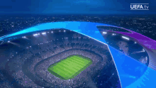

TABELA DE JOGOS


Cruzeiro segue sem vencer no brasileirão e volta ser o lanterna! Será que os péssimos resultados se manteram também na libertadores?
O Atlético perde mais uma fora de casa e se distancia do topo da tabela. Será que o "Barba" vai conseguir consertar esse problema crônico do galo de não conseguir vencer fora da Arena?
